A working answer to Mentella Health’s application task
HR tracks hiring in a shared Google Sheet. When a row turns “Hired”, this system sends the welcome email, keeps proof of every send, and alerts a human the moment anything stops working. It is running live right now, and this document is a tour of it.
Live demo: https://welcome-copilot.vercel.app
Source: https://github.com/averatec0773/welcome-copilot
An unofficial demo. All people and policies are fictional, and every recipient address is a + alias of the author’s own inbox. Every screenshot here is taken from the live system, unedited except for cropping.
The idea
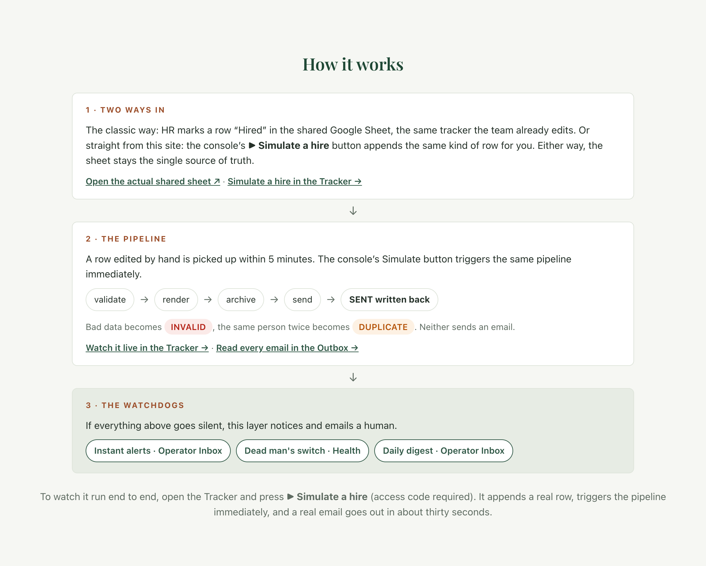
The landing page, live. Two ways in (edit the sheet, or press Simulate), one pipeline, and a watchdog layer underneath. Every chip links to the console page where that stage is visible.
Two of these are permanently staged in the live sheet, so the guards are always on display.
| Alarm | Catches |
|---|---|
| Instant alert emails | Errors the pipeline can see |
| Dead-man’s switch | Silence itself: dead trigger, revoked auth |
| Daily digest | The slow drift a human should read about |
The digest signs off with: “No news from me tomorrow would itself be a signal.”
The console · 1 of 3
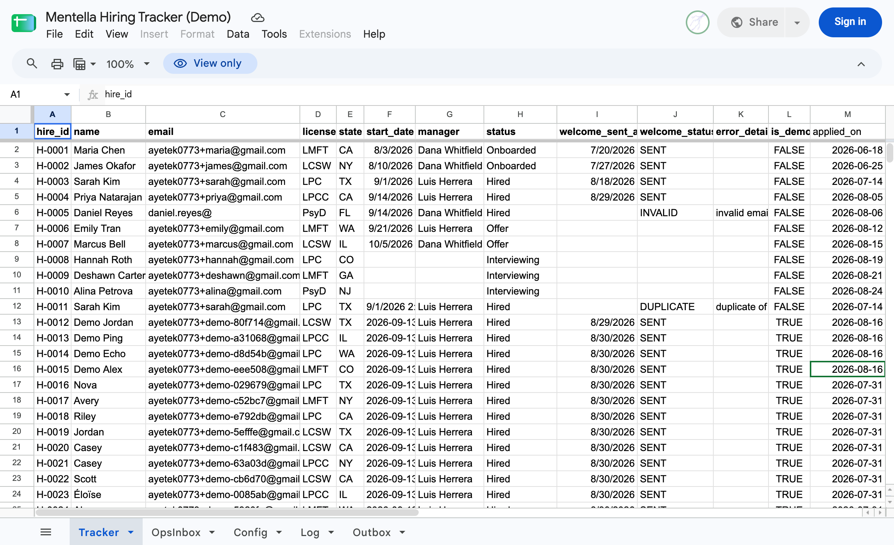
The actual shared Sheet, publicly viewable. HR’s columns on the left, the pipeline’s results (welcome_sent_at, status, error) written back beside them. The demo rows at the bottom were all created by visitors pressing one button.
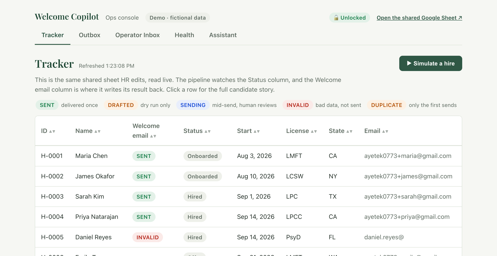
The console reads the same sheet. Every column sorts on click, every row expands into the full candidate story, and the two deliberately broken rows (H-0005, H-0011) keep the guards visible.
The console · 2 of 3
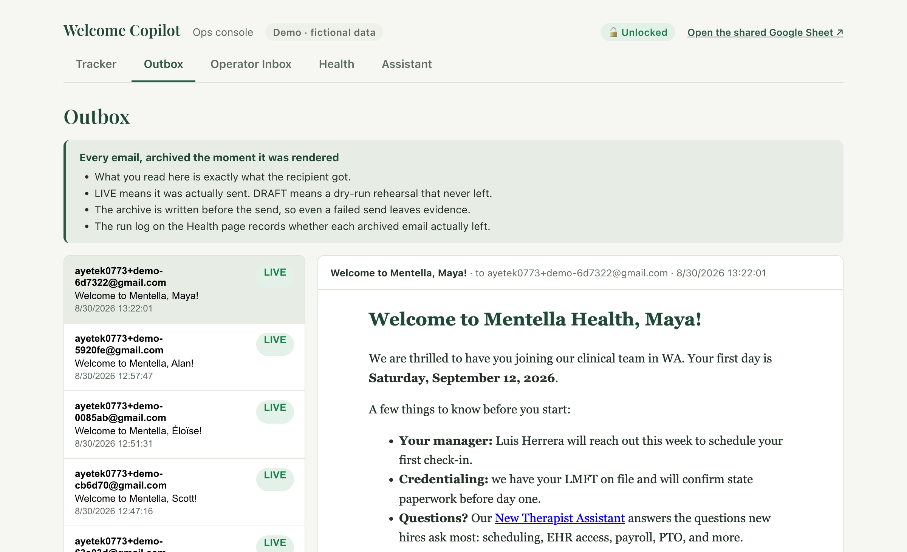
The Outbox: every email archived at the moment it was rendered, before the send, so even a failed send leaves evidence. What you read here is exactly what the recipient got.
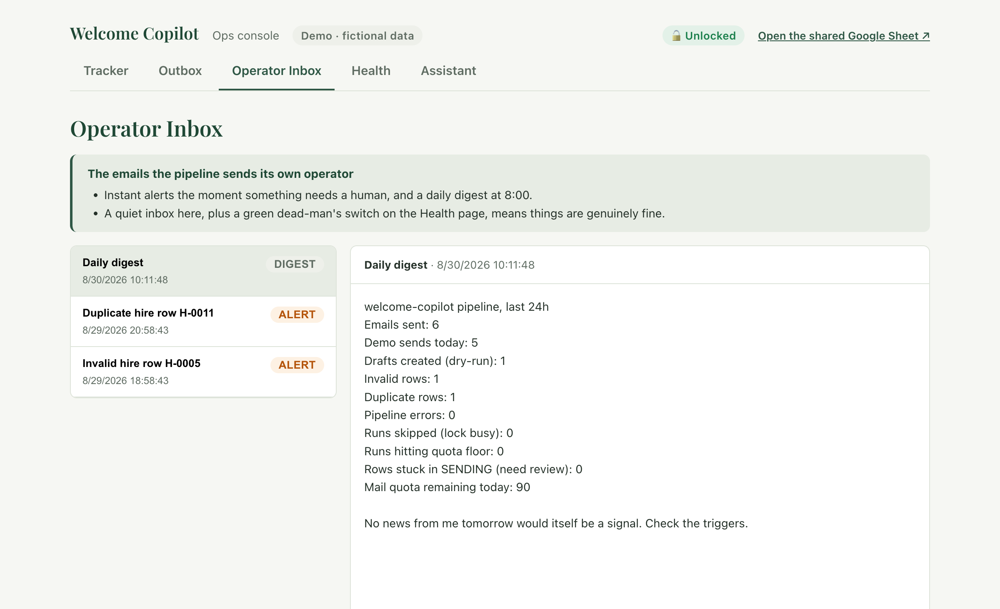
The Operator Inbox: the alerts and daily digests the pipeline mails its human.
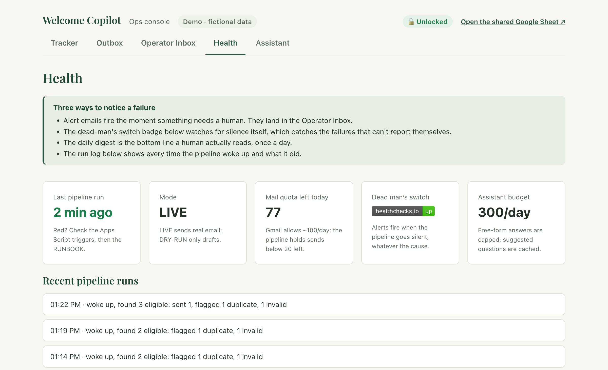
Health: last run, mode, mail quota, the dead-man’s switch badge, and a plain-English run log.
The console · 3 of 3
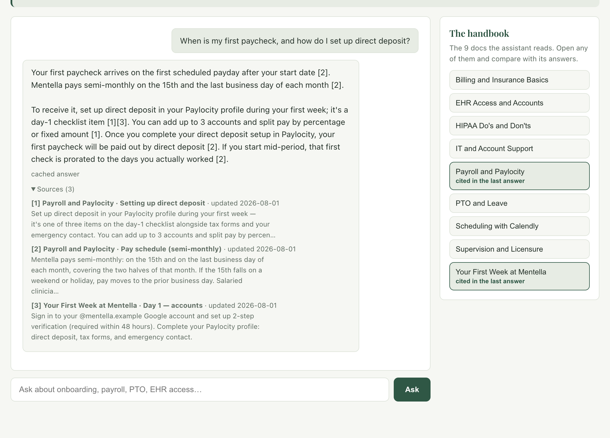
Every answer carries numbered citations, and the docs it drew from light up in the handbook rail: “cited in the last answer”.
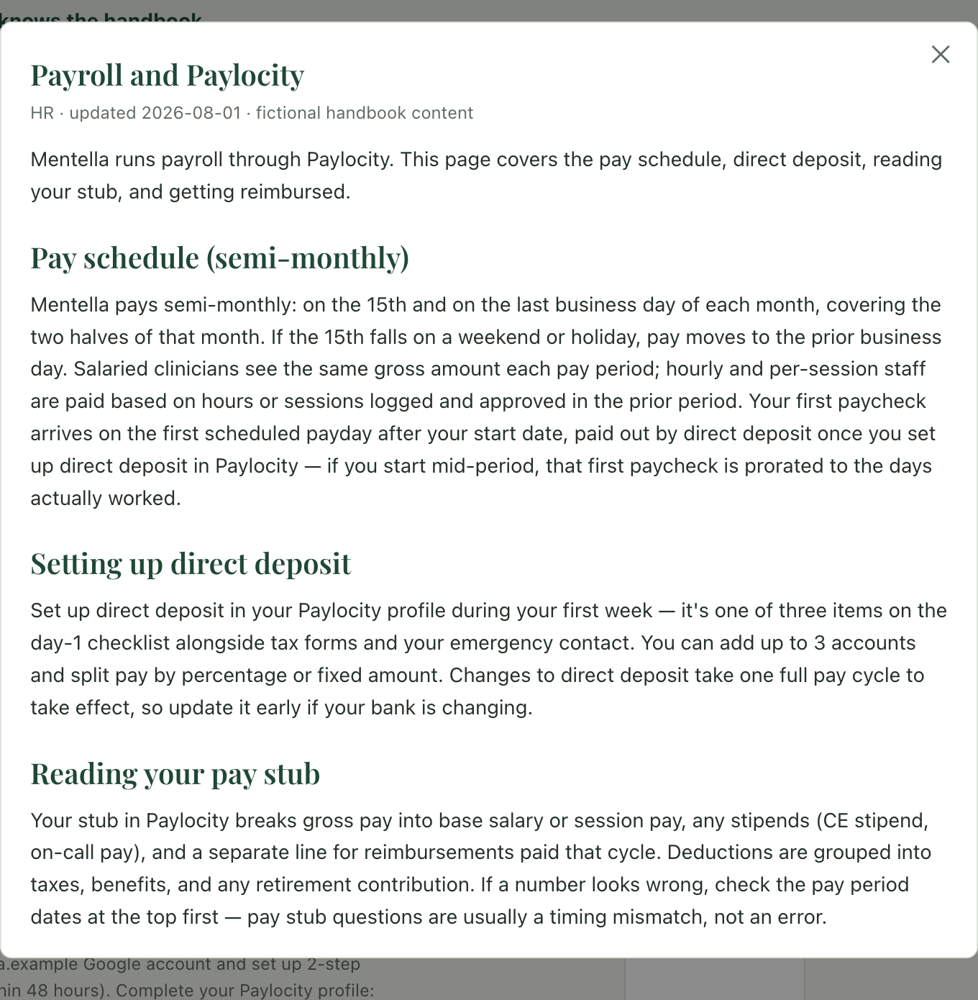
Click any doc in the rail and read the source on the spot, so an answer can be checked, not just believed.
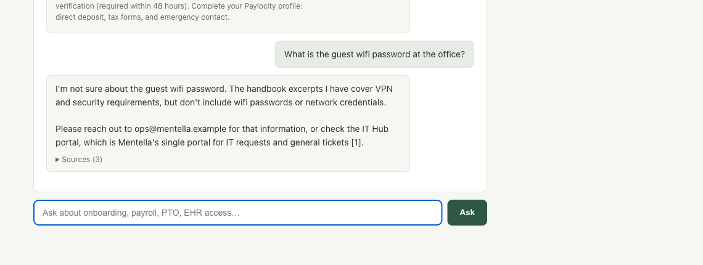
Asked for the office wifi password: not in the handbook, so it says so and points to a human. No guessing.
The four suggested questions are open to everyone (cached answers, zero cost). Free-form questions run live through Claude and need the access code. Limits are shown, never silent: 8 a minute per visitor, 300 a day for the whole demo.
One hire, end to end · 1 of 2
Simulate appends a genuine row to the shared sheet, exactly like HR marking someone Hired, then triggers the pipeline immediately. The form says out loud what will happen: the typed name lands on the public sheet (so make one up), the email goes to an alias, and your own address never appears anywhere public. About thirty seconds later there is a SENT badge and the actual email, previewed in place.
Step 1 · Fill in a name
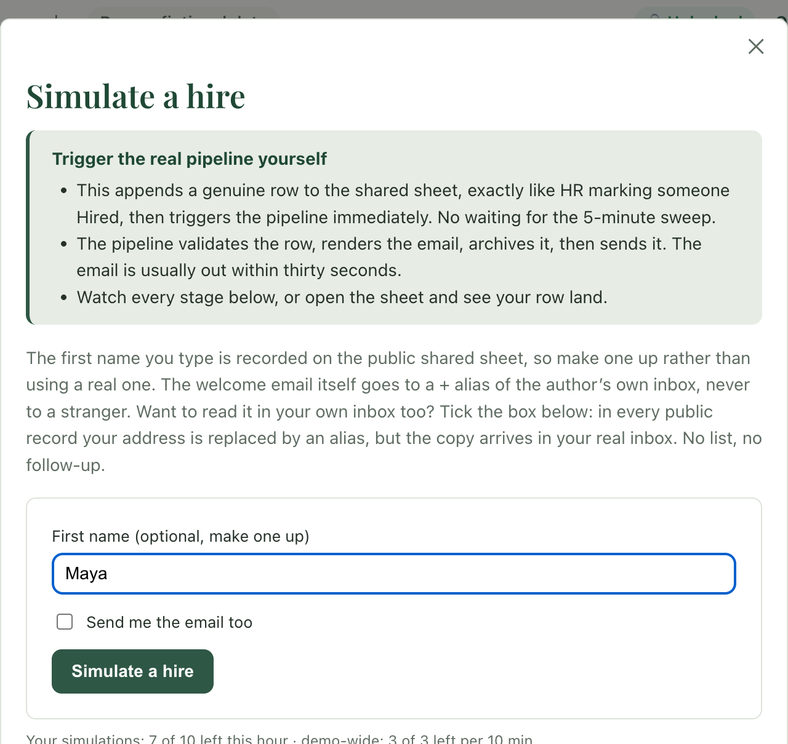
Step 2 · Row 26, sent, previewed
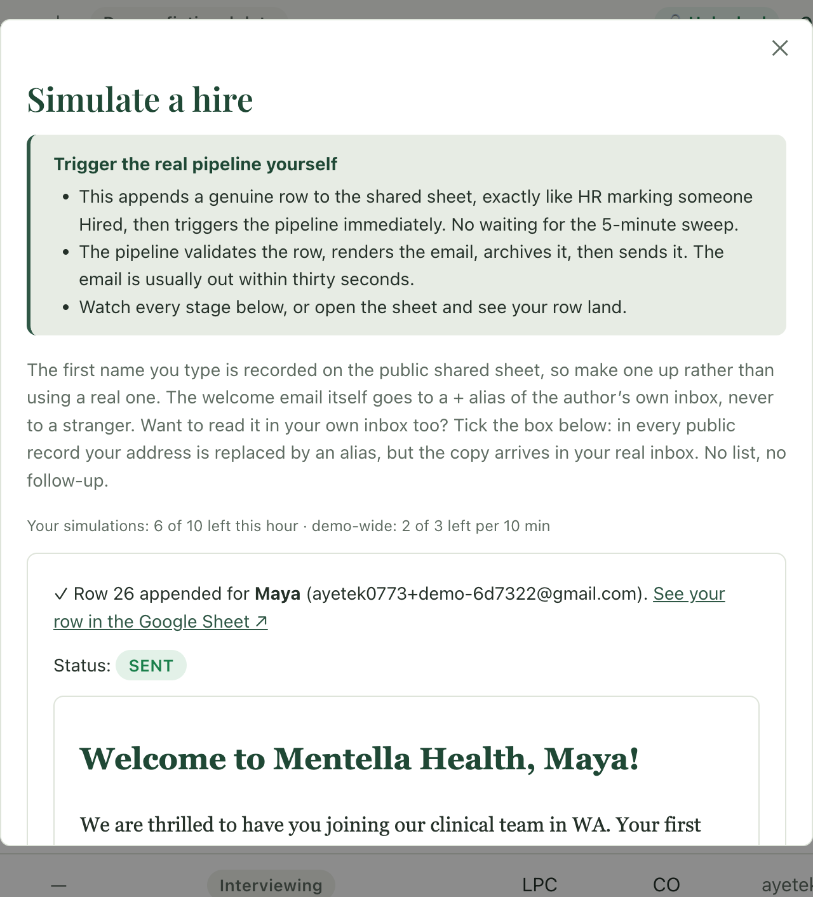
Names work in any language: this demo has greeted a Maya, a Scott, and an Éloïse today. Live remaining counts sit under the form, because a limit someone discovers by silently failing is treated as a bug.
One hire, end to end · 2 of 2
In the tracker, expanded: the full candidate story
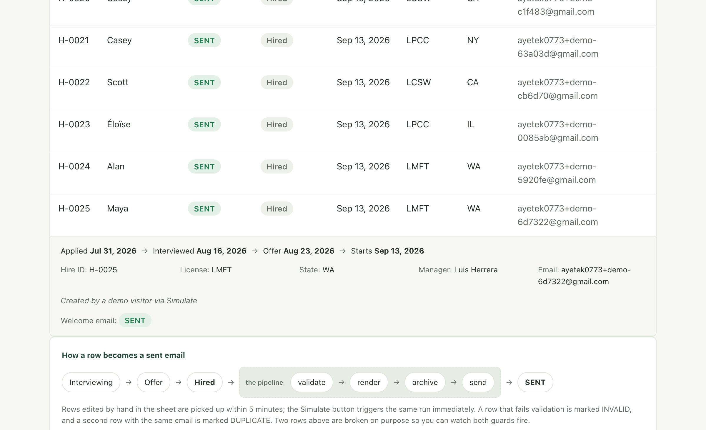
In a real Gmail inbox, disclaimer included
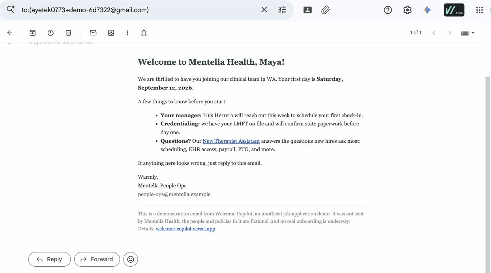
Delivered to the + alias (see the search bar), greeting the chosen name, with a footer that says exactly what this is: a demonstration, fictional people, no real onboarding. Demo rows are archived automatically after 7 days.
Worth knowing
Open https://welcome-copilot.vercel.app and click around; the console and the suggested questions are open to everyone. With the access code, press ▶ Simulate a hire and watch a real email go out in about thirty seconds.
Point the same pipeline at the real tracker behind a dry-run flag for a week, then extend the pattern to the other spreadsheet-shaped handoffs around onboarding. Where a system has no API (several core clinical and billing systems don’t), treat the scheduled export as the interface and validate it loudly; a working slice of that ships in this repo too.
Built with Google Apps Script, Next.js, Claude, and a healthy fear of silent failures.
Unofficial demo for an application to Mentella Health. All data fictional.